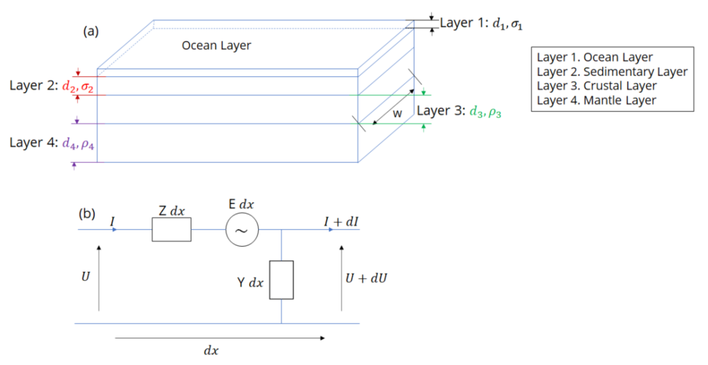
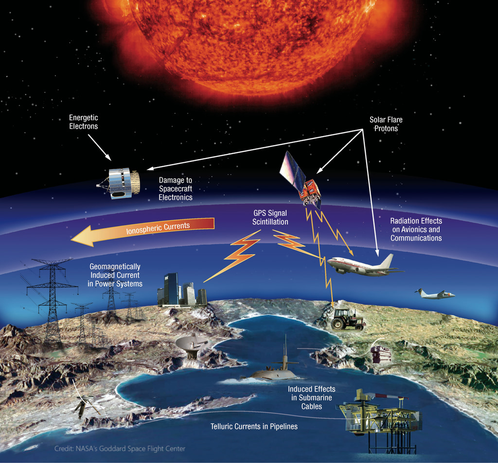
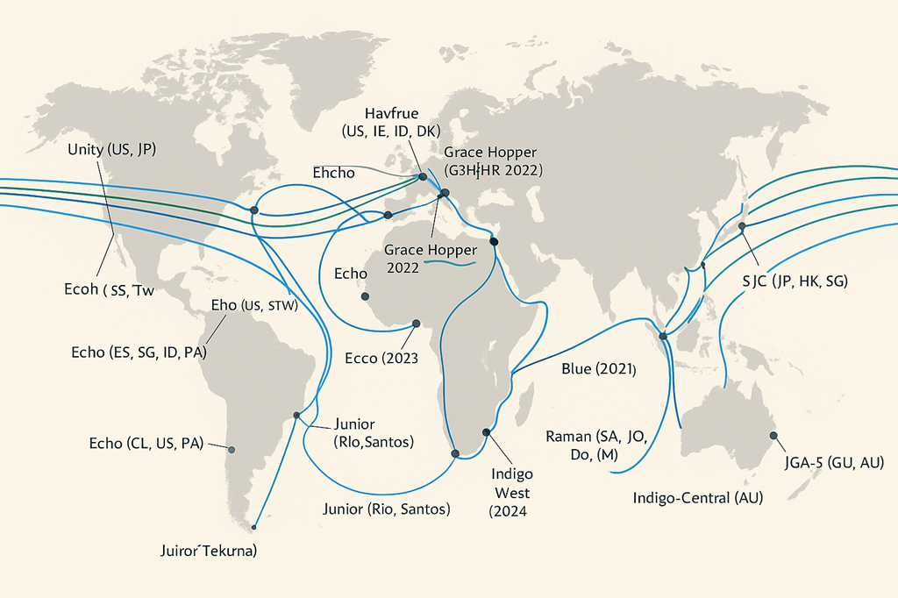

GMD & Submarine Cable Vulnerability (SCUBAS)
Characterizing induced underwater geoelectric fields and geomagnetically induced currents along submarine fiber-optic cable routes
Overview
This research is focused on the characterization of induced underwater geoelectric fields (GEFs) and potential along submarine cables during various geomagnetic disturbances (GMDs). Geomagnetic disturbances, originating from diverse space weather phenomena, induce GEFs at different spatiotemporal scales within the Earth and water bodies. These GEFs, in turn, generate geomagnetically induced currents (GICs) that flow through electrical infrastructure, posing a significant risk to critical systems like submarine cables during intense space weather events.
To achieve this, we utilize SCUBAS (Submarine Cable Upset By Auroral Streams), an open-source computational model developed in Python, specifically designed to estimate induced underwater GEFs and voltage in the presence of geomagnetic perturbations recorded by ground-based magnetometers. SCUBAS leverages advancements in magnetotelluric (MT) studies and GIC understanding, marking a substantial advancement in analyzing and predicting the impact of space weather on submarine cable systems.
Thin-Sheet Electromagnetic Model
SCUBAS employs a generalized thin sheet analysis specifically designed for frequencies that penetrate through both the conductive and resistive layers. This analysis allows for a comprehensive understanding of the electromagnetic behavior of this layered structure (Ranganayaki and Madden, 1980).

Fig 1. The thin-sheet electromagnetic model used in SCUBAS to estimate geoelectric fields across the ocean floor. The model accounts for seafloor conductivity heterogeneity and sediment thickness, representing the double-layer structure as a transmission line with series impedance Z and parallel impedance Y.
More recently, Wang et al. (2023) demonstrated that the generalized thin sheet analysis can be effectively implemented by representing the double layer as a transmission line. This transmission line model incorporates the concept of series impedance (Z), which takes into account the resistivity and thickness of the conductive layers, and a parallel impedance (Y), which accounts for the resistance through the resistive layers.
Geomagnetically Induced Voltages in Cables

Fig 2. Geomagnetically induced voltage distribution along a transoceanic submarine cable during an extreme geomagnetic storm, computed using SCUBAS. Peak voltages can exceed the tolerance of repeater equipment.
Global Cable Network Vulnerability

Fig 3. Global submarine cable network showing routes assessed for geomagnetic vulnerability. High-risk corridors include North Atlantic, North Pacific, and routes crossing continental shelves with thin oceanic crust. This research addresses critical concerns in safeguarding submarine cable infrastructure against space weather-induced disruptions.